Left half
44 vertices · 74 triangles.
Node offset [0, 0, 0]; source-to-local translation [0, 0, 0].
Picked: texture set B — warm heartwood. For every wooden sign, the notice-board roof and the matching inventory icons. The notice board now also has two model halves for integration.
Picked warm heartwood B, including the unchanged roof. The original model is cut at x = +0.5. The two exported halves are placed at (0, 0, 0) and (+1, 0, 0); both use the same 64 × 64 atlas. These unlettered views are rendered from the exported OBJ triangles, so text cannot conceal the join.
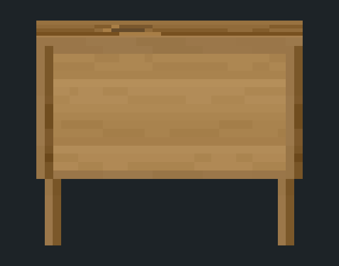


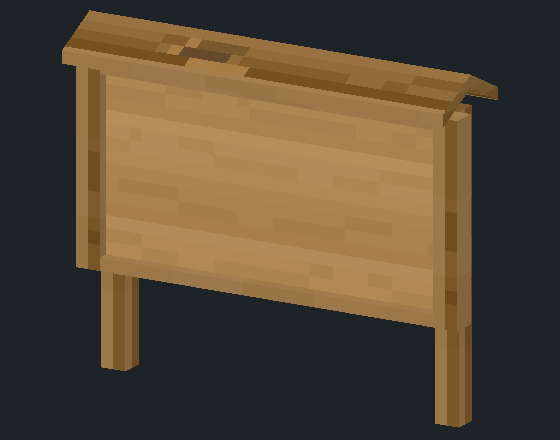
44 vertices · 74 triangles.
Node offset [0, 0, 0]; source-to-local translation [0, 0, 0].
44 vertices · 74 triangles.
Node offset [1, 0, 0]; source-to-local translation [-1, 0, 0].
Front preview convention: front faces −Z; +X points screen-right. Left is the original x ≤ 0.5 half; right is x ≥ 0.5, shifted −1 in x for its own node. Only the touching cut surfaces are uncapped. Exterior edges, normals, UVs and total surface area are checked. Nearest-neighbour texel-edge ties use the same 1e-7-texel precision for both models. The integration lane handles the game's OBJ x mirror and maps the halves to main/helper nodes. Full measurements, hashes and six exterior-view comparisons · Shared B atlas.
Picked: B — warm heartwood (2026-10-31). The user's choice for the standing sign, waypost, notice board including this roof, wooden wall sign and all three matching inventory icons. Roof geometry and B's roof texture stay exactly as shown.
Same shipped models: standing A, waypost B, notice board B. Only their wood changes. These A/B labels select a complete texture set. All pass-3 lettering uses the shipped 6 × 12 pixel cells, 1/128 node per pixel and ink #2B1E14. Front and angled views share identical cameras in every column.
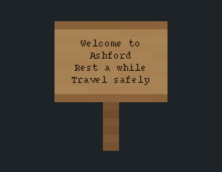
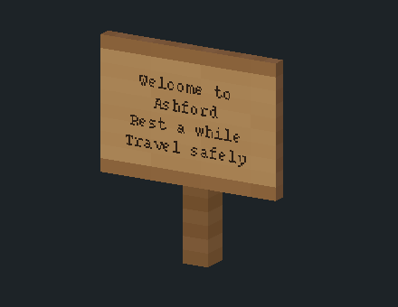

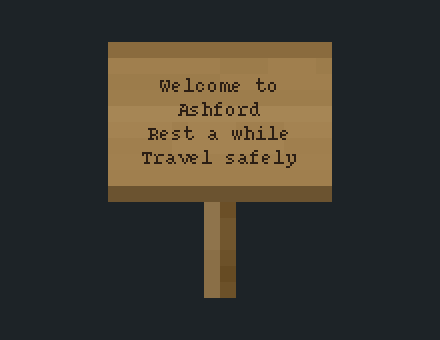
Planed timber: muted golden boards, soft long grain and restrained edges.
Texture PNG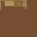
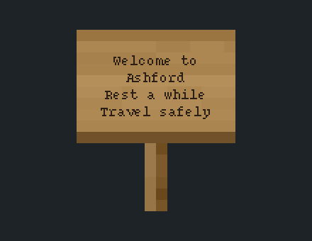
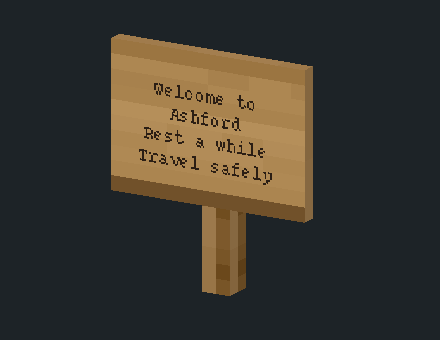
Warm heartwood: honey-coloured boards, richer grain and deeper frame seams.
Texture PNG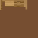
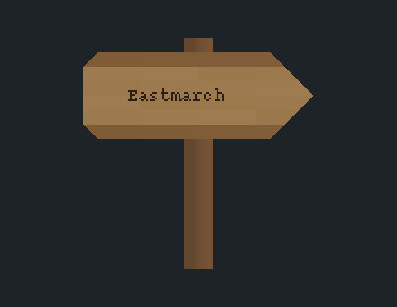
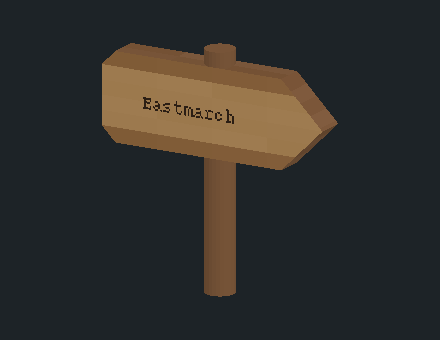
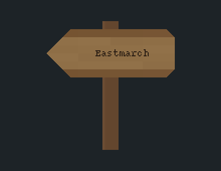

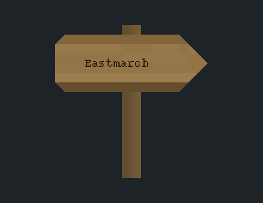
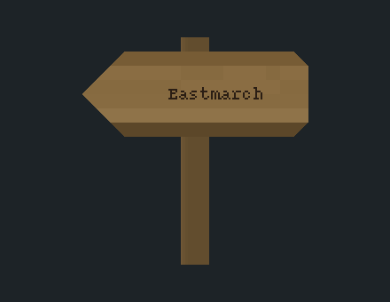
Planed timber: muted golden boards, soft long grain and restrained edges.
Texture PNG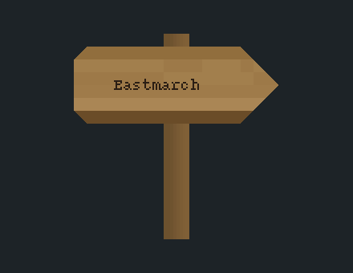
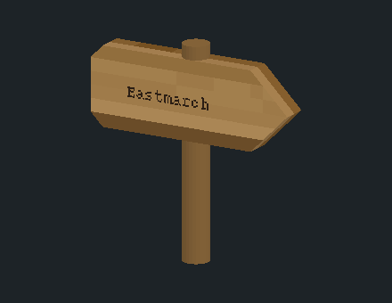
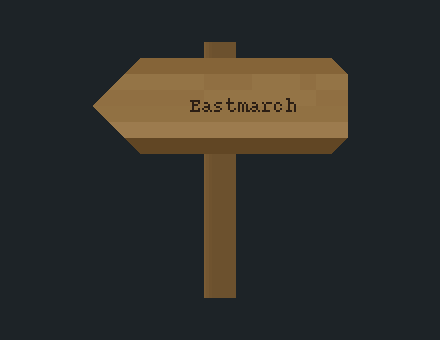
Warm heartwood: honey-coloured boards, richer grain and deeper frame seams.
Texture PNG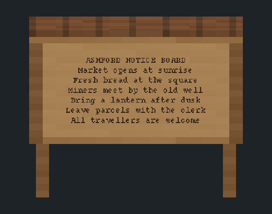
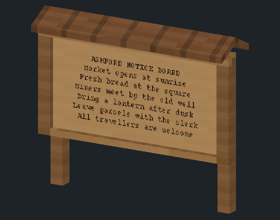
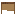
16 / 32 px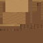
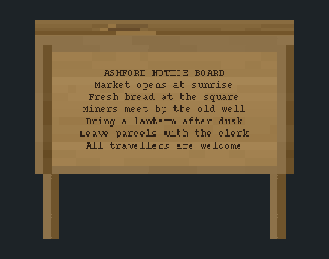
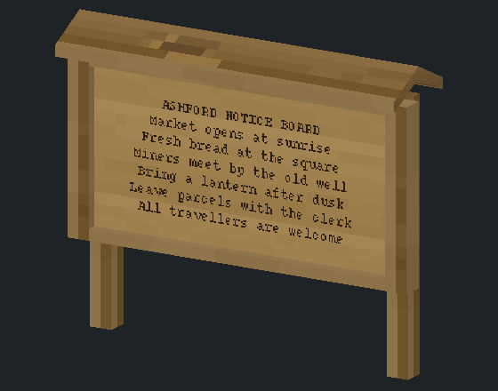
Planed timber: muted golden boards, soft long grain and restrained edges.
Texture PNG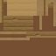
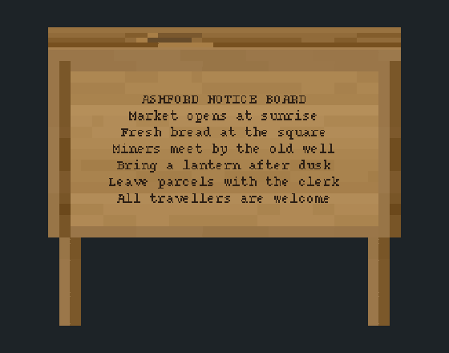
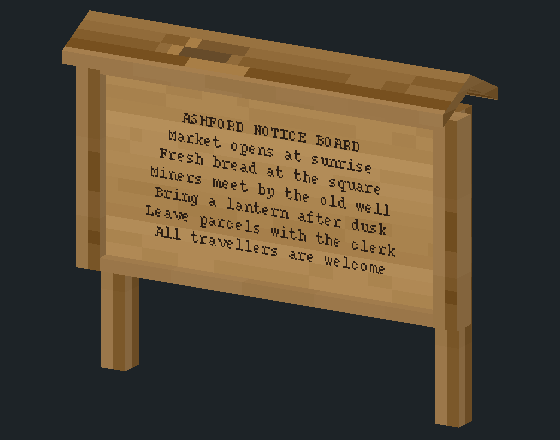
Warm heartwood: honey-coloured boards, richer grain and deeper frame seams.
Texture PNG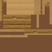
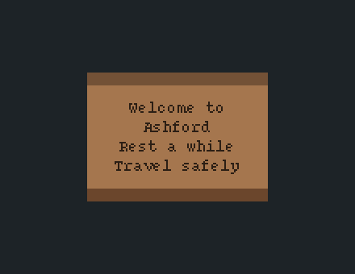
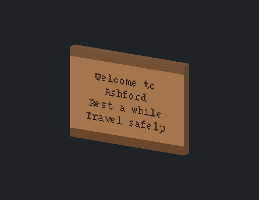
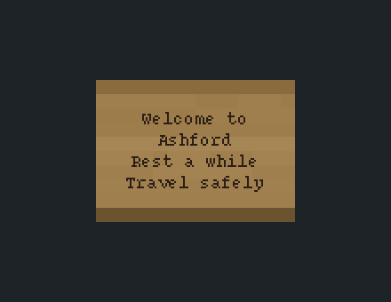
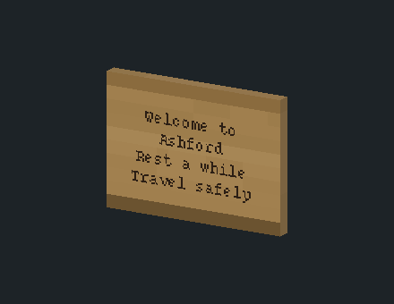
Planed timber: muted golden boards, soft long grain and restrained edges.
Texture PNG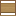
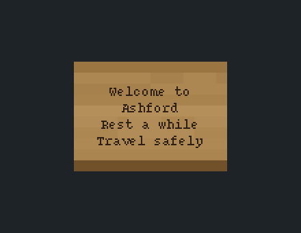
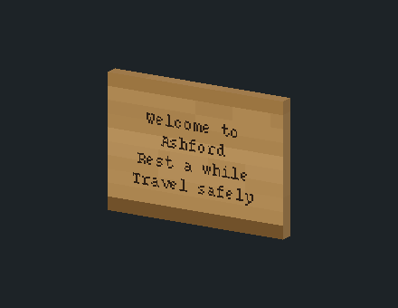
Warm heartwood: honey-coloured boards, richer grain and deeper frame seams.
Texture PNG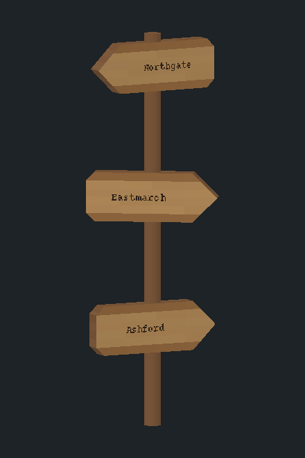
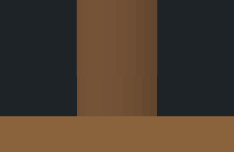
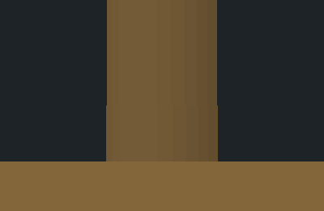
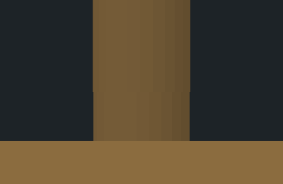
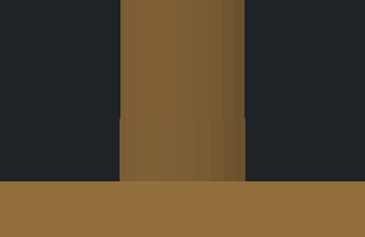
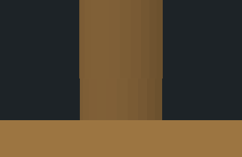
Rotations: −115.5°, −84°, +61.5°; one-node spacing. The 24-sided post keeps its exact geometry. All sides share a one-texel-wide UV patch, so its wood sample stays uniform along the full height and around the circumference. Vertical structure on this post comes from its existing facets; individual painted fibres cannot be added under the fixed UV layout. No knots, bands or end-colour changes interrupt a join. The square standing-sign and notice-board posts have vertical grain.
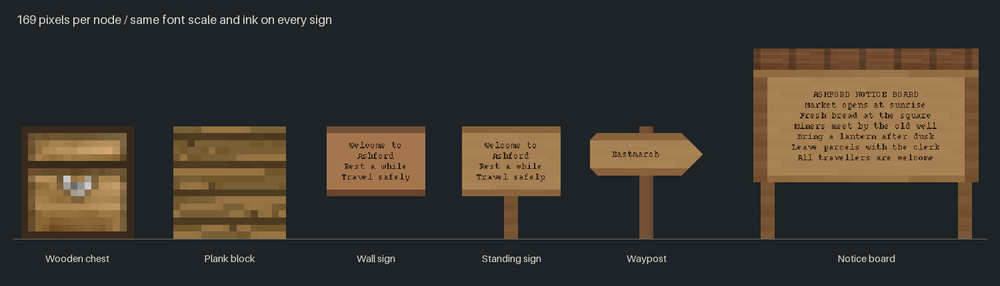
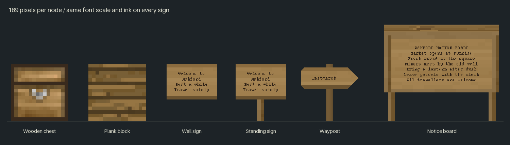
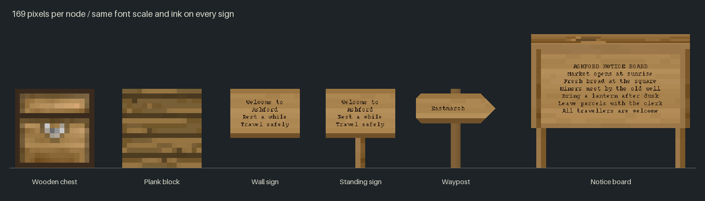
Original candidate art: CC0-1.0; comparison strips retain the credited chest/plank licences. Offline projections; desktop/web filtering and lighting remain for the user's in-game check. The sections below preserve the earlier shape choices and pass-2 wall comparison.
A plain plank on a slim post, closest to the existing wall sign.
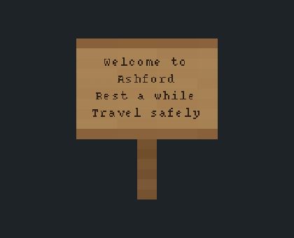
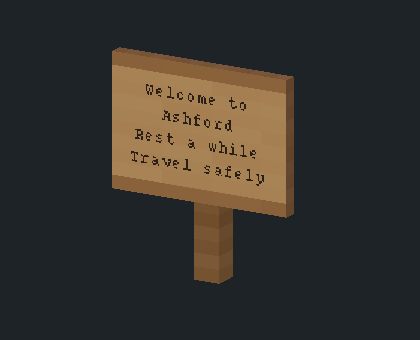
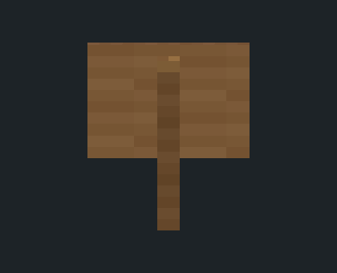
16 vertices · 24 triangles
64 × 64 atlas · one material
4 lines × 15 characters
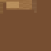
A stout post and a narrow timber frame give the same writing area more weight.
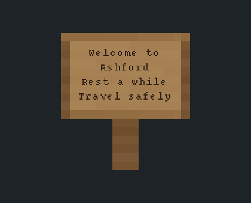
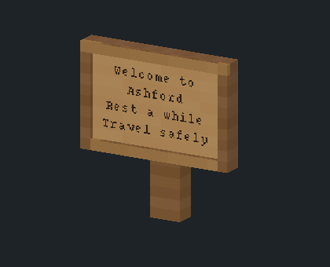
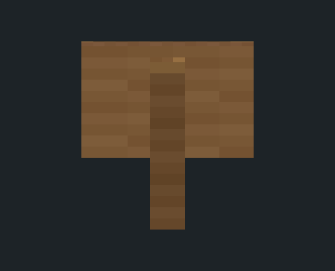
36 vertices · 72 triangles
64 × 64 atlas · one material
4 lines × 15 characters
A narrow pointed plank keeps the road direction quick to read.
106 vertices · 156 triangles
64 × 64 atlas · one material
1 lines × 14 characters
A broad carved arrow with clipped tail corners makes a stronger silhouette.

110 vertices · 164 triangles
64 × 64 atlas · one material
1 lines × 14 characters
Post ends meet at each node boundary. The 24-sided round profile has less than 0.009 of a wood texel radial variation between arbitrary rotations. The writing faces remain clear on both sides.
An open framed board on two posts leaves the community notices in plain view.
44 vertices · 84 triangles
64 × 64 atlas · one material
7 lines × 30 characters
A small pitched timber cap shelters the board and marks a shared meeting place.

56 vertices · 108 triangles
64 × 64 atlas · one material
7 lines × 30 characters

Origin: centre of the left base node, viewed from the front. Second base node: +X. Width: 2 nodes. Height from the ground: A 1.5 nodes; B 1.6875 nodes. Both require clear space above the base row.
Old and new boards on a wall, with the picked standing sign A alongside.
Every board uses the same four lines, bitmap glyphs and dark ink #2B1E14.
The light iron board also needs this dark ink. The same ink on both old and new textures
isolates the surface change; this is an offline comparison, not a before/after engine capture.
Even warm timber writing surface, with the familiar narrow rim.

16 × 16 px · board #B68357 · ink #2B1E14
Even light grey iron writing surface, with the familiar narrow rim.
16 × 16 px · board #AAAAAA · ink #2B1E14
The front occupies columns 1–14 and rows 3–12 (zero-based) of each tile; rows 4–11 are completely flat colour. Rows 3 and 12 retain the narrow top and bottom rim. After the engine's wallmounted tile rotations, all four thin edges read row 15. Inventory and wield icons keep their existing artwork and colours.
All five objects share one camera and one scale. The wall sign uses its existing 0.875 × 0.625-node board with the new calm wood texture; the chest is a one-node cube with its existing wooden textures. Lettering is a separate preview plane on every sign. The comparison strips scroll horizontally on narrow screens.
Each of the six model candidates has one OBJ, one MTL, one 64 × 64 texture atlas, a 16 × 16 inventory icon and a JSON text-area specification. Each model uses one texture slot, wood. A wood texel spans 1/16 node; the atlas stores multiple face patches rather than stretching 64 pixels over a node.
The sample font keeps its original glyph pixels: 0.0075 node per pixel, 0.105 node line spacing, identical on all surfaces. Sample text is separate from the model and its texture. Preview characters use a seven-pixel advance; the receiving text module owns wrapping and fit.
Each JSON records the writing-plane centre, size, outward normal, reading-right vector, suggested selection/collision boxes and the model bounds. The waypost records its arrow direction and both reading sides. The boxes are model-local; the integration lane handles rotation.
Offline software projections, not engine captures. Desktop and web appearance, lighting and filtering remain part of the user's in-game review after integration.